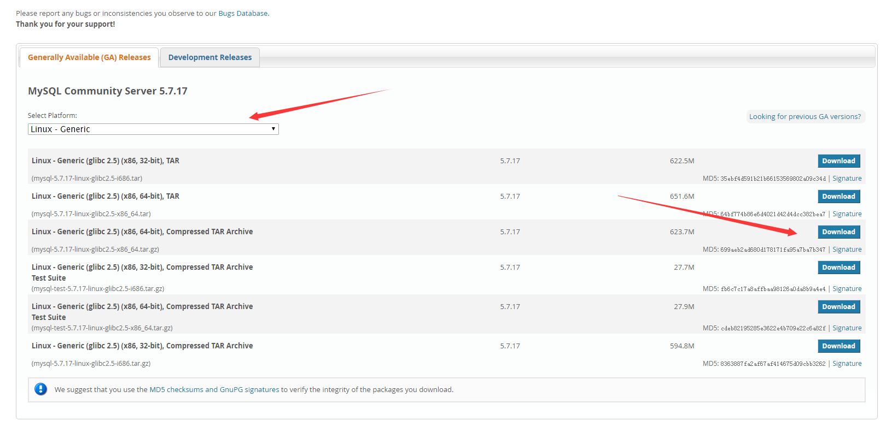
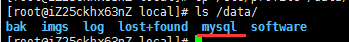
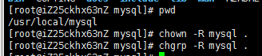
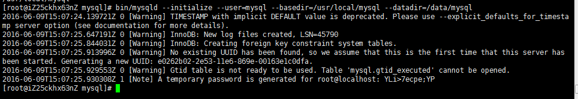
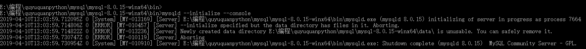
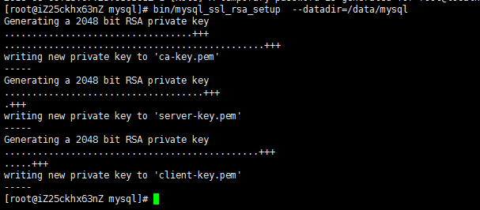
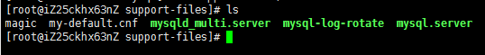
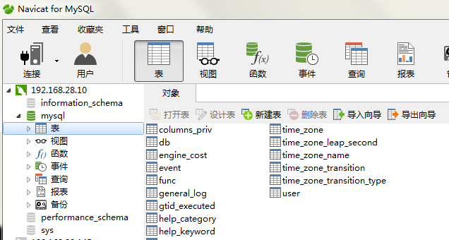
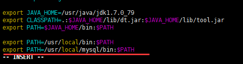

一、安装YUM Repo
1、由于CentOS 的yum源中没有mysql，需要到mysql的官网下载yum repo配置文件。
下载命令：
1 | wget https://dev.mysql.com/get/mysql57-community-release-el7-9.noarch.rpm |
2、然后进行repo的安装：
1 | rpm -ivh mysql57-community-release-el7-9.noarch.rpm |
执行完成后会在/etc/yum.repos.d/目录下生成两个repo文件mysql-community.repo mysql-community-source.repo
二、使用yum命令即可完成安装
注意：必须进入到 /etc/yum.repos.d/目录后再执行以下脚本
1 | ## 1、安装命令： |
三、登录：
1 | ## 1、方式一（已验证）： |
3、若登录不了，则进行以下配置，跳过登录验证
3.1、重置密码的第一步就是跳过MySQL的密码认证过程，方法如下：
3.2、vim /etc/my.cnf(注：windows下修改的是my.ini)
在文档内搜索mysqld定位到[mysqld]文本段：
/mysqld(在vim编辑状态下直接输入该命令可搜索文本内容)
在[mysqld]后面任意一行添加“skip-grant-tables”用来跳过密码验证的过程
3.3、保存文档并退出：
#:wq
3.4、接下来我们需要重启MySQL：
四、登录成功后修改密码
1、注意：这里会进行密码强度校验（密码设置时必须包含大小写字母、特殊符号、数字，并且长度大于8位）
2、如不满足以上条件则会报错，如下图：
密码策略问题异常信息：
ERROR 1819 (HY000): Your password does not satisfy the current policy requirements
3、解决办法：
3.1、查看 mysql 初始的密码策略，
1 | 输入语句 “ SHOW VARIABLES LIKE 'validate_password%'; ” 进行查看， |
3.2、首先需要设置密码的验证强度等级，设置 validate_password_policy 的全局参数为 LOW 即可，
1 | 输入设值语句 “ set global validate_password_policy=LOW; ” 进行设值， |
3.3、当前密码长度为 8 ，如果不介意的话就不用修改了，按照通用的来讲，设置为 6 位的密码，设置 validate_password_length 的全局参数为 6 即可，
1 | 输入设值语句 “ set global validate_password_length=6; ” 进行设值， |
3.4、现在可以为 mysql 设置简单密码了，只要满足六位的长度即可，
1 | 输入修改语句 “ ALTER USER 'root'@'localhost' IDENTIFIED BY '123456'; ” 可以看到修改成功，表示密码策略修改成功了！！！ |
3.5、注：在默认密码的长度最小值为 4 ，由 大/小写字母各一个 + 阿拉伯数字一个 + 特殊字符一个，
只要设置密码的长度小于 3 ，都将自动设值为 4 ，
3.6、关于 mysql 密码策略相关参数；
1）、validate_password_length 固定密码的总长度；
2）、validate_password_dictionary_file 指定密码验证的文件路径；
3）、validate_password_mixed_case_count 整个密码中至少要包含大/小写字母的总个数；
4）、validate_password_number_count 整个密码中至少要包含阿拉伯数字的个数；
5）、validate_password_policy 指定密码的强度验证等级，默认为 MEDIUM；
关于 validate_password_policy 的取值：
LOW：只验证长度；
1/MEDIUM：验证长度、数字、大小写、特殊字符；
2/STRONG：验证长度、数字、大小写、特殊字符、字典文件；
6）、validate_password_special_char_count 整个密码中至少要包含特殊字符的个数；
五、修改密码
1 | ## 1、方式一（已验证）： |
六、开启远程控制
MySQL默认是没有开启远程控制的，必须添加远程访问的用户，即默认是只能自己访问，别的机器是访问不了的。
1、方式一（已验证）：
1 | 1.1、连接服务器: mysql -u root -p |
2、方式二（未验证）：
1、使用 grant 命令
1 | grant all privileges on 数据库名.表名 to 创建的用户名(root)@"%" identified by "密码"; |
2、格式说明：
数据库名.表名 如果写成.代表授权所有的数据库 flush privileges; #刷新刚才的内容
如：
1 | grant all privileges on *.* to root@"113.123.123.1" identified by "123456789"; |
七、其他配置
1 | ## 1、设置安全选项： |
八、mysql5.7zip安装教程
1.去官网下载满足系统要求的版本 （mysql-5.7.37-winx64.zip）
2.解压到指定目录（D:\database\mysql-5.7.37-winx64）
3.配置环境变量，添加到系统变量Path中，在末尾添加“D:\database\mysql-5.7.37-winx64\bin”，这样就不用每次切换到bin目录才能使用mysql
4.新建my.ini文件（解压包里是没有my-dafault.ini或自带my.ini文件，需自己创建）编辑写入以下信息
1 | [] |
5.mysql初始化，以管理员权限打开cmd命令窗口，切换到”D:\database\mysql-5.7.37-winx64\bin”路径下，输入指令 mysqld —initialize —user=mysql —console ，该命令会在mysql-5.7.21-winx64目录下创建data文件夹及初始数据库，生成root用户和临时密码，红色标注部分多留意。
6.安装mysql服务，继续在窗口输入指令mysqld install MySQL —defaults-file=”C:\Program Files\mysql-5.7.21-winx64\my.ini”路径是你my.ini文件的绝对路径
7.启动mysql服务，输入 net start mysql，启动成功，会出现下面的截图。如果服务一直处于启动中，说明上一步的操作有误，核实my.ini文件路径是否正确
8.修改root用户密码 输入 mysql -u root -p，然后输入5步骤中生成的临时密码。修改密码命令：set password = password(‘新密码’); 注意语句末尾带分号，show databases; 查看一下初始的数据库。
9.至此，mysql已经安装成功了。使用navicat测试一下。
1. MySQl版本：
现在最新版本为8，使用最多的是5.x;
5.0~5.1: 早期产品的延续，升级维护；
5.2~5.3：使用很少
5.4~5.x：MySQL整合了三方公司的新的存储引擎（推荐使用 5.5）
2. Linux 安装
【安装命令：yum、 tar、 rpm】
手动下载相应的安装文件夹【分为client 和 server 两个安装包】
rpm -ivh 需要安装的软件名称
或者 使用 yum install mysql 直接进行安装【无需下载直接安装】
如果软件提示冲突，使用【yum -y remove 要卸载的名称】进行卸载（*是通配符）
【冲突原因】：可能是系统安装时有默认安装一个MySQL数据库
安装成功后，查看安装日志，可以新增root用户密码
安装时先安装服务端，然后再安装客户端。
如果安装过程中提示“GPG keys …” 安装失败，解决方案：
rpm -ivh 要安装的软件名称 —force —nodops
验证是否安装成功：[mysqladmin —version]
启动：service mysql start
关闭：service mysql stop
重启：service mysql restart
重启电脑后，登陆MySQL: mysql
- 如果登陆成功，则正常使用即可；
- 如果登陆失败，可能会报错：【/var/lib/mysql/mysql.sock不存在】
- 原因是mysql的服务没有启动。
- 启动服务：
- 每次使用前手动启动服务： /etc/init.d/mysql start
- 开机自启： chkconfig mysql on, 关闭chkconfig mysql off
- 检查开始是否自动启动：nesysv
linux安装mysql教程
1系统约定
安装文件下载目录：/data/software
Mysql目录安装位置：/usr/local/mysql
数据库保存位置：/data/mysql
日志保存位置：/data/log/mysql
2下载mysql
在官网：http://dev.mysql.com/downloads/mysql/ 中，选择以下版本的mysql下载：

执行如下命名：
#mkdir /data/software
#cd /data/software
—下载安装包
—建议：在windows上使用迅雷下载，速度很快（我的是1M/s），然后用工具（Xftp）上传到 /data/software目录下；
#wget http://dev.mysql.com/get/Downloads/MySQL-5.7/mysql-5.7.17-linux-glibc2.5-x86_64.tar.gz
3解压压缩包到目标位置
#cd /data/software
—解压压缩包
#tar -xzvf /data/software/mysql-5.7.17-linux-glibc2.5-x86_64.tar.gz
—移动并修改文件名
#mv /data/software/mysql-5.7.17-linux-glibc2.5-x86_64 /usr/local/mysql
4创建数据仓库目录
—/data/mysql 数据仓库目录
# mkdir /data/mysql
#ls /data/

**5新建mysql用户、组及目录
**# —-新建一个msyql组
# useradd -r -s /sbin/nologin -g mysql mysql -d /usr/local/mysql —-新建msyql用户禁止登录shell
6改变目录属有者
#cd /usr/local/mysql
#pwd
#chown -R mysql .
#chgrp -R mysql .

#chown -R mysql /data/mysql
**7配置参数
**# bin/mysqld —initialize —user=mysql —basedir=/usr/local/mysql —datadir=/data/mysql

此处可能出现的问题
如图mysqld —initialize —console后出现报错

initialize specified but the data directory has files in it.
Newly created data directory
其实是data中存在了已有的数据 ，删除data 文件中的数据即可。
此处需要注意记录生成的临时密码，如上文结尾处的：YLi>7ecpe;YP
#bin/mysql_ssl_rsa_setup —datadir=/data/mysql

8修改系统配置文件
#cd /usr/local/mysql/support-files

# cp my-default.cnf /etc/my.cnf
# cp mysql.server /etc/init.d/mysql
# vim /etc/init.d/mysql
修改以下内容：

9启动mysql
# /etc/init.d/mysql start
—登陆
# mysql -hlocalhost -uroot -p
—如果出现：-bash: mysql: command not found
—就执行： # ln -s /usr/local/mysql/bin/mysql /usr/bin —没有出现就不用执行
—输入第6步生成的临时密码
—修改密码
mysql> set password=password(‘root’);
—设置root账户的host地址（修改了才可以远程连接）
mysql>grant all privileges on . to ‘root’@’%’ identified by ‘root’;
此处可能出现的问题
1 | 【mysql】You must reset your password using ALTER USER statement before executing this statement报错处理 |
mysql>flush privileges;
—查看表
mysql> use mysql;
mysql> select host,user from user;
—这里就可以使用远程连接测试了；

如提示不能成功连接，可能需要添加需要监听的端口
/sbin/iptables -I INPUT -p tcp —dport 3306 -j ACCEPT
10添加系统路径
# vim /etc/profile
添加：
export PATH=/usr/local/mysql/bin:$PATH
如下：

# source /etc/profile
**11配置mysql自动启动
**# chmod 755 /etc/init.d/mysql
# chkconfig —add mysql
# chkconfig —level 345 mysql on
以上就是linux环境Mysql 5.7.13安装教程，希望对大家的学习有所帮助。
补充：
—退出mysql命令窗口
#exit
—查看mysql状态
#service mysql status
—停止mysql
#service mysql stop
—启动mysql
#service mysql start
附my.cnf（这是一个配置mysql配置文件，暂时可以不用管，如你想钻研 你可以百度或google “mysql my.cnf 配置详情”）
/etc/my.cnf
# For advice on how to change settings please see
# http://dev.mysql.com/doc/refman/5.7/en/server-configuration-defaults.html
# DO NOT EDIT THIS FILE. It’s a template which will be copied to the
# default location during install, and will be replaced if you
# * upgrade to a newer version of MySQL.
[mysqld]
# Remove leading # and set to the amount of RAM for the most important data
# cache in MySQL. Start at 70% of total RAM for dedicated server, else 10%.
innodb_buffer_pool_size = 10G
# Remove leading # to turn on a very important data integrity option: logging
# changes to the binary log between backups.
log_bin
character-set-server=utf8
collation-server=utf8_bin
init-connect=’SET NAMES utf8’
# These are commonly set, remove the # and set as required.
basedir = /usr/local/mysql
datadir = /export/mysql/var
port = 3306
server_id = 22206
socket = /export/mysql/mysql.sock
binlog_format = statement
# Remove leading # to set options mainly useful for reporting servers.
# The server defaults are faster for transactions and fast SELECTs.
# Adjust sizes as needed, experiment to find the optimal values.
join_buffer_size = 128M
sort_buffer_size = 2M
read_rnd_buffer_size = 2M
log_bin_trust_function_creators = on
sql_mode=NO_ENGINE_SUBSTITUTION,STRICT_TRANS_TABLES
lower_case_table_names=1

...
...
Copyright 2021 sunfy.top ALL Rights Reserved